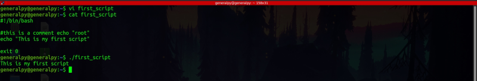
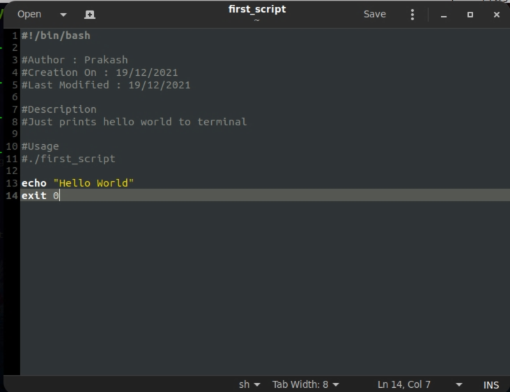

Comments are lines in a bash script which are not executed. Comments are ignored by the interpreter an are used for documentation purposes.
It is always good to add comments to tell others or even yourself looking at a piece of code after a long to tell what that code is doing.
Comments in bash start with #. Every text after this symbol till a new line will be treated as a comment.
#comment....
There are certain pieces of comments which are recommended to be written in scripts to make it more proffesional.
Author : Comment stating name of the author.
Creation and Modification dates : Comment stating creation and last modification date of script.
Description : Comment stating what script must do.
Usage : Comment stating how this scripts should be used. Also includes all the options that must be added.
Our simple script to write hello world can be :
#!/bin/bash
#Author : Prakash
#Creation On : 19/12/2021
#Last Modified : 19/12/2021
#Description
#Just prints hello world to terminal
#Usage
#./first_script
echo "Hello World"
exit 0

This script will still print only hello world but it is much more documented.